Backoffice web - guia de uso
Login
Se pedirá al usuario un correo electrónico y una contraseña asociadas a una cuenta de administrador
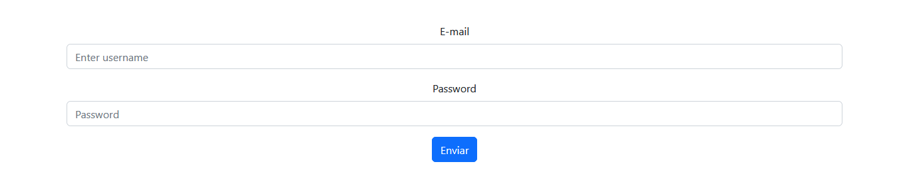
Agregar administradores
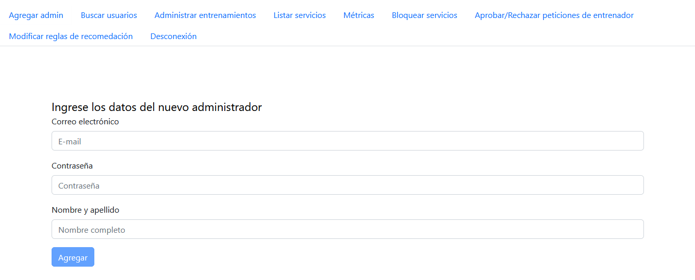
Campos requeridos
-
Correo electrónico: El mismo será pedido para poder acceder al Backoffice
-
Contraseña
-
Nombre y apellido del administrador
Buscar usuarios
Al acceder a la pestaña de "Buscar Usuarios" en la barra de navegación nos encontramos con la siguiente ventana
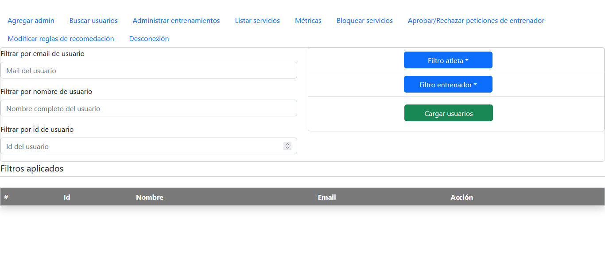
Se pueden aplicar los siguientes filtros:
- Correo electrónico del usuario
- Nombre del usuario
- Id del usuario
- Atleta
Si el usuario que queremos encontrar es o no un Atleta
- Entrenador
Si el usuario que queremos encontrar es o no un Entrenador
Los filtros pueden combinarse para reducir la busqueda
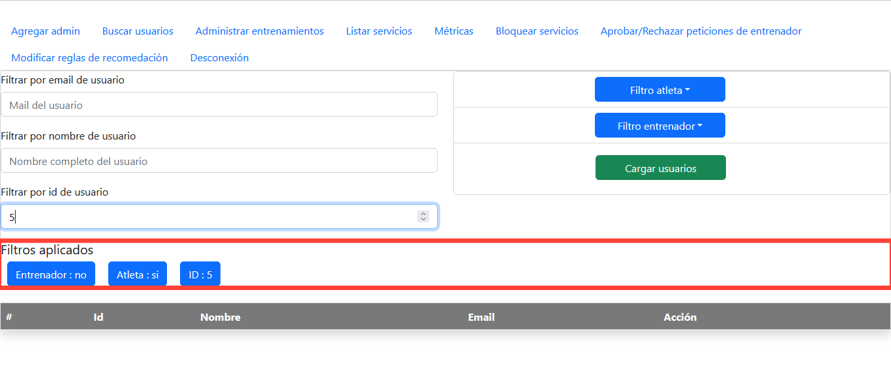
Para remover los filtros, se hace click en los mismos para removerlos
Para realizar la busqueda, se selecciona "Cargar usuarios".
A continuación se presentan los resultados de una busqueda de usuarios sin
filtros aplicados
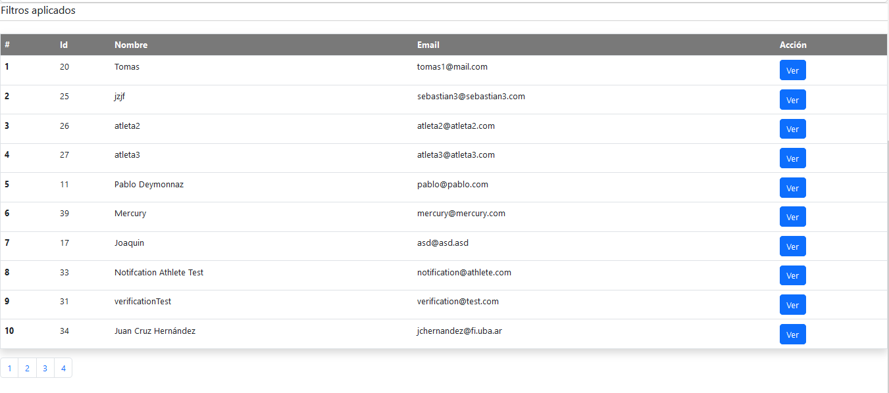
Bloqueo/desbloqueo de usuarios
Tomámos un usuario que no se encuentra bloqueado, y seleccionamos el boton "Ver"
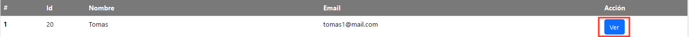
Nos redirige a una página cargada con los datos del usuario y la opción de bloquearlo
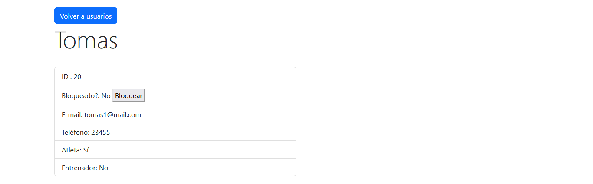
Seleccionando la opción bloquear, el usuario queda bloqueado
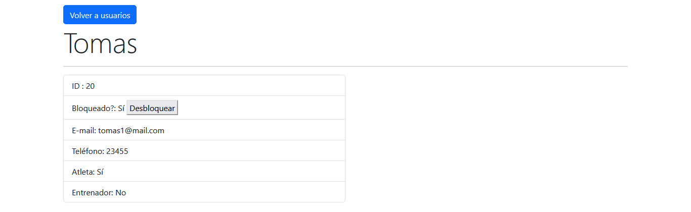
Para debloquearlo, se debe apretar el mismo botón.
Listar servicios
Al ingresar correctamente al Backoffice. Se presentara un listado del estado
de los distintos servicios
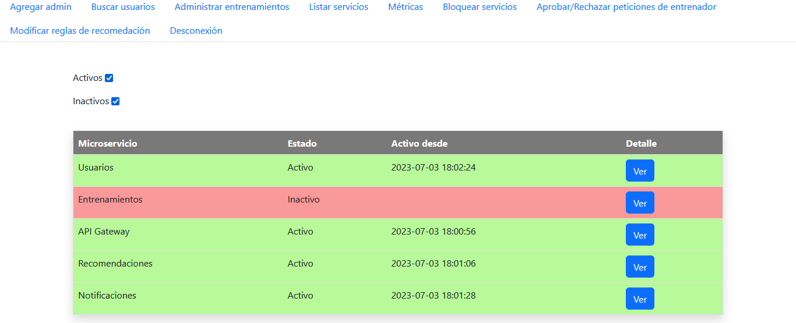
Servicios en rojo se encuentran inactivos, en verde se encuentran activos
El filtro de la página permite mostrar sólo los servicios activos/inactivos
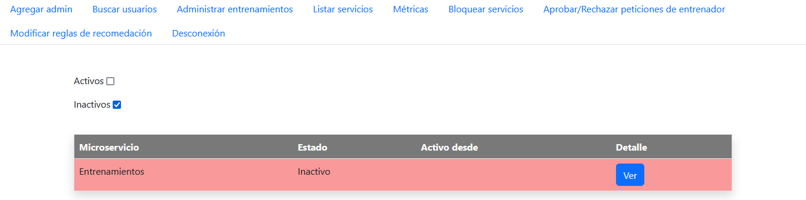
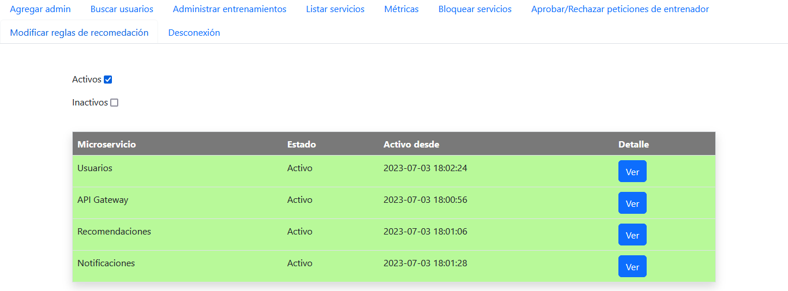
Bloquear servicios
Seleccionando "Bloquear servicios" en la barra de navegación nos encontramos con
la siguiente página
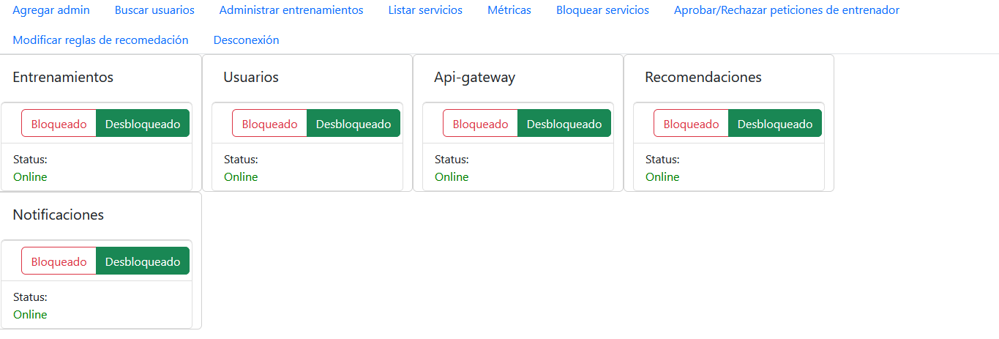
Cada servicio tiene un toggle, que indica el estado actual del servicio y un "Estado" que
indica si el servicio se encuentra disponible. Que un servicio se encuentre bloqueado
no implica que el servicio no esta disponible. Un servicio no disponible no muestra ningún
estado en su toggle.
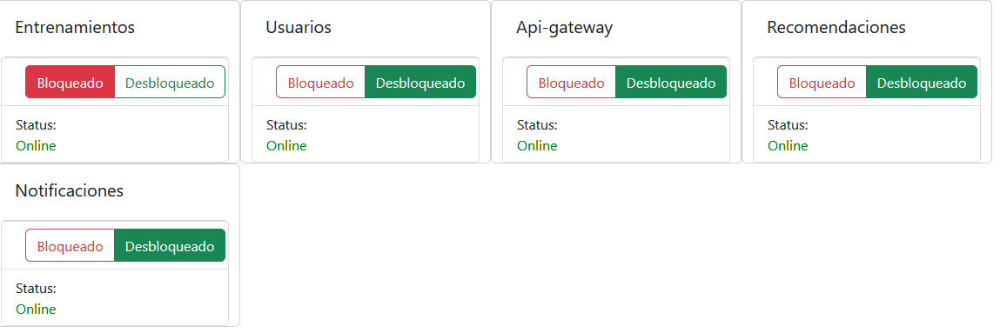
Al bloquear un servicio, el mismo aparece listado como inactivo en la pagina de servicios
Aprobar/rechazar peticiones de entrenador reconocido
La pestaña "Aprobar/rechazar peticiones de entrenador" muestra las distintas peticiones
realizadas por los entrenadores. Cada petición tiene un video asociado, que no aparece
inicialmente en la ventana.
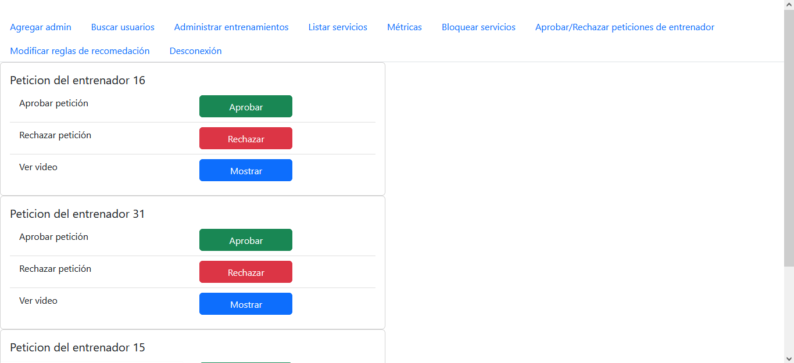
Seleccionar "mostrar" permite visualizar el video en la misma página
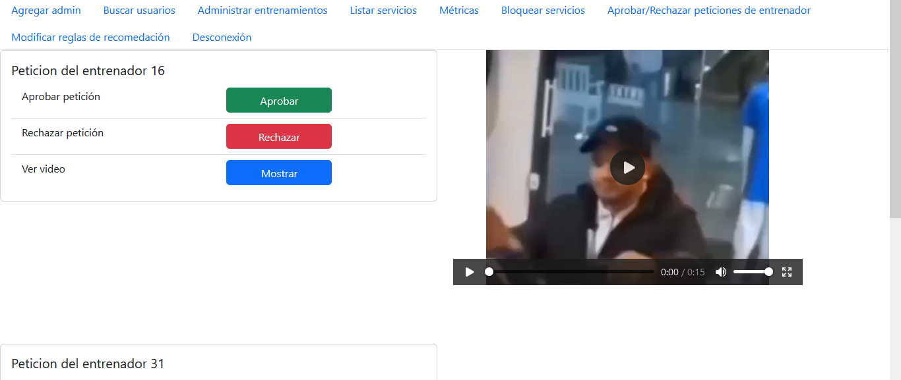
Administrar entrenamientos
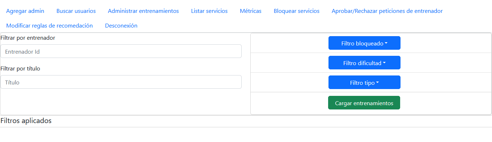
Filtros aplicables
Se pueden aplicar los siguientes filtros a los entrenamientos:
-
Id entrenador
-
Título del entrenamiento
-
Entrenamiento bloqueado/desbloqueado
-
Dificultad del entrenamiento (fácil/medio/dificil)
-
Tipo del entrenamiento
Los filtros pueden combinarse entre si. Para eliminar los filtros ya
aplicados, basta con hacer click sobre los mismos
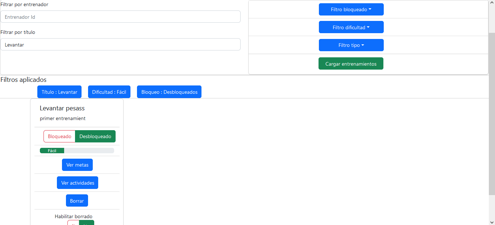
Edición de entrenamientos
Los entrenamientos pueden ser bloqueados/desbloqueado o borrados. Para borrar, es necesario
previamente habilitar la opción de borrado para el entrenamiento que se desea eliminar
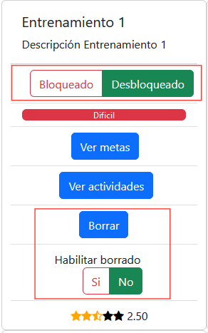
Vista de metas
Seleccionando la opcion "ver metas" abre una nueva ventana con las metas asociadas al entrenamiento
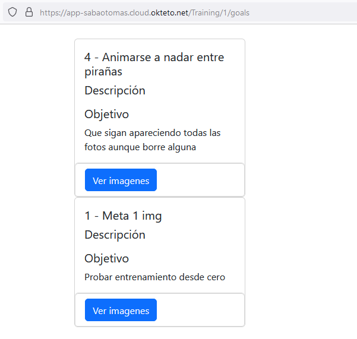
Vista de actividades
Seleccionando la opción "ver actividades" abre una nueva ventana con las actividades asociadas al entrenamiento.
Cada actividad tiene un título, una descripción y una imágen asociada. En el caso de que no posea una imagen, se
muestra un placeholder
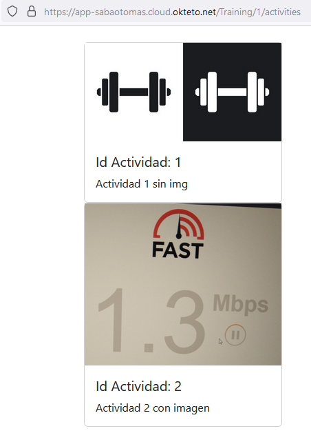